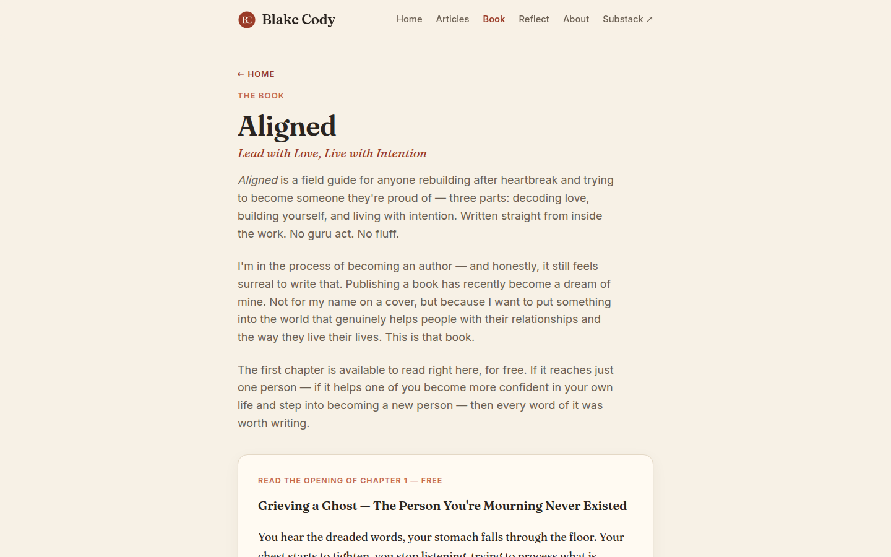

blakecody.com — UI & visual design audit / change log
/book.html
images on book.html: [ "logo.png" ] the 30×30 header mark. That is all.
page depth: desktop 2,833px (3.15 folds) · mobile 4,959px (5.88 folds)
Nearly three screens of text on desktop, nearly six on mobile, and not one visual anchor in any of it. The eye has nowhere to rest and nothing to remember the page by.
This is T24 from the SEO report arriving as a design problem rather than a schema one. And it is worth restating the correction that came with it: in my page-01 report I claimed cover.jpg was unused book cover art. It is not — it is a photograph of you at the 2025 U.S. Open, now correctly used on the About page. There is no cover art anywhere in the repository. This is an asset to create, not one to find.
Book schema, and every social share of the book are all currently missing.H2 "READ THE OPENING OF CHAPTER 1 — FREE" 13.1px section-label H3 "Grieving a Ghost — …" the chapter title excerpt body 17.92px contrast 14.73 ✓ genuinely well set H2 "Keep reading — get the full chapter." the gate .chapter-submit 214×46 ✓ a real button
The excerpt reads beautifully — 17.9px is a proper reading size and the contrast is excellent. Then the gate arrives, and it is a heading, a line of text and a form field on the same cream background as everything above it.
A gate has one job: to make the reader feel the cut. The fade at the end of the excerpt does some of that work. But visually there is no shift in weight, colour or surface at the exact moment you are asking for something, so the ask reads as more page rather than as a decision point.
Fix.gate-fade so the last two lines genuinely dissolve rather than stopping. The cut should feel like an interruption, not a layout boundary.Note the interaction with the SEO report: C24 recommends extending the free excerpt to 400–600 words, and T22 Option B recommends publishing the whole chapter and dropping the gate entirely. If you take Option B, this finding disappears and the page becomes a reading page. Do not invest in gate design before that decision.
Measured: 2,833px on desktop, all of it a single 720px column of paragraphs at 17.92px. The blurb is three paragraphs, then a label, then the excerpt, then the gate. No pull-quote, no rule, no change of measure, no image.
The type is well set — 17.92px at 5.52 contrast for the blurb, 14.73 for the excerpt — so this is not a legibility problem. It is a pacing problem: nothing signals to a scanner that the page has parts, so someone deciding whether to invest six minutes cannot tell what they are being offered.
FixMeasured on --bg #f7f1e6: both .eyebrow elements — "← HOME" and "The book" — use --accent-soft #c46a4f at 13.1px for a ratio of 3.38, against the 4.5 AA requirement.
The link inside the first eyebrow renders #9a3b27 and measures 6.17, so it passes — meaning within one component the link is readable and the surrounding label is not.
Same token, same fix as everywhere else: --accent for these, or darken --accent-soft to about #a8532f. It closes this page, articles, reflect, about and 404 together.
alert() LowSubmitting successfully reveals a styled card — "It's on the way 📩" — with the manual download link. Good.
Submitting when the network fails calls alert("Something went wrong sending that…"): a native browser dialog, in the OS font, with an OK button, on top of your page. It is the one moment where a reader who wanted your chapter did not get it, and it is the least considered pixel on the site.
// app.js, both form catch blocks
alert("Something went wrong sending that. Mind trying again in a moment?");
Fix: an inline error message inside the form, styled like the rest of it, with the text you already wrote. Same for the Reflect form, which does the same thing.
h3 instead of a paragraph, which was T25.| Check | Result |
|---|---|
| Page depth | 1440 → 2,833px (3.15 folds) · 820 → 2,828px (2.40) · 390 → 4,959px (5.88) |
| Images | 1 — logo.png at 30×30. No cover art exists in the repository. |
| Headings | H1 (44.8px, with subtitle) → H2 → H3 → H2 → H2 — clean |
| Typography | blurb 17.92px / 5.52 ✓ · excerpt 17.92px / 14.73 ✓ · eyebrows 13.1px / 3.38 fail |
| Buttons | .chapter-submit 214×46 ✓ |
| Mobile nav | clientW 170 · scrollW 385 · Reflect, About, Substack off-screen (R1) |
| Content column | .wrap 720px (V1) |
| Focus ring | browser default (R3) |
| Error state | native alert() |
UI page 03 of 7 complete.
blakecody.com UI change log · generated 7 September 2026